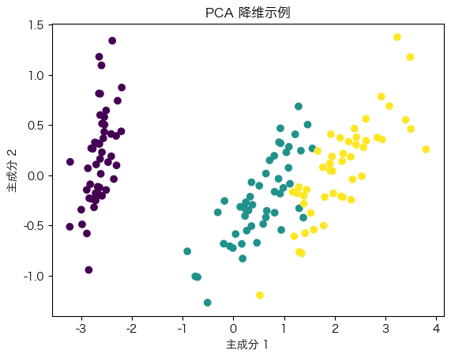

机器学习简介#
在本节中，我们将介绍机器学习的基本概念、应用领域以及一些常见的机器学习算法。机器学习是一门通过数据和算法来让计算机进行预测和决策的学科。
机器学习的定义#
机器学习是一种使计算机在没有明确编程指令的情况下通过数据进行学习和改进的技术。它可以用于分类、回归、聚类、降维等多种任务。
机器学习的应用#
机器学习有广泛的应用，包括但不限于：
图像识别：如面部识别、物体检测。
自然语言处理：如语言翻译、情感分析。
推荐系统：如电影推荐、商品推荐。
医疗诊断：如疾病预测、图像诊断。
机器学习的分类#
机器学习主要分为三类：监督学习、无监督学习和强化学习。
监督学习#
监督学习使用带标签的数据进行训练，使模型能够从输入特征预测输出标签。常见的监督学习任务包括分类和回归。
import numpy as np
import matplotlib.pyplot as plt
from sklearn.linear_model import LinearRegression
from sklearn.datasets import make_regression
# 设置字体和解决负号显示问题
plt.rcParams['font.sans-serif'] = ['Hiragino Sans GB', 'WenQuanYi Zen Hei']
plt.rcParams['axes.unicode_minus'] = False
# 生成示例数据
X, y = make_regression(n_samples=100, n_features=1, noise=0.1)
# 拟合线性回归模型
model = LinearRegression()
model.fit(X, y)
# 绘制回归直线
plt.scatter(X, y, color='blue')
plt.plot(X, model.predict(X), color='red')
plt.title('线性回归示例')
plt.xlabel('特征')
plt.ylabel('目标')
plt.show()
无监督学习#
无监督学习使用未带标签的数据进行训练，使模型能够发现数据中的结构或模式。常见的无监督学习任务包括聚类和降维。
from sklearn.datasets import make_blobs
from sklearn.cluster import KMeans
# 生成示例数据
X, _ = make_blobs(n_samples=300, centers=4, cluster_std=0.60, random_state=0)
# 拟合 K-means 模型
kmeans = KMeans(n_clusters=4)
kmeans.fit(X)
y_kmeans = kmeans.predict(X)
# 绘制聚类结果
plt.scatter(X[:, 0], X[:, 1], c=y_kmeans, s=50, cmap='viridis')
plt.scatter(kmeans.cluster_centers_[:, 0], kmeans.cluster_centers_[:, 1], s=200, c='red', marker='X')
plt.title('K-means 聚类示例')
plt.xlabel('特征 1')
plt.ylabel('特征 2')
plt.show()
强化学习#
强化学习通过与环境的互动来学习策略，以最大化累积奖励。它在机器人控制、游戏AI等领域有广泛应用。
常见的机器学习算法#
机器学习算法种类繁多，以下是一些常见的机器学习算法：
线性回归：用于回归任务，通过拟合一条直线来预测目标值。
逻辑回归：用于分类任务，通过估计事件发生的概率来预测类别。
决策树：用于分类和回归任务，通过树状结构来做出决策。
支持向量机：用于分类任务，通过寻找最优超平面来分离不同类别。
K-means：用于聚类任务，通过将数据分为K个簇。
主成分分析（PCA）：用于降维任务，通过寻找数据的主成分来降低维度。
from sklearn.decomposition import PCA
from sklearn.datasets import load_iris
# 加载示例数据
iris = load_iris()
X = iris.data
# 拟合 PCA 模型
pca = PCA(n_components=2)
X_pca = pca.fit_transform(X)
# 绘制降维结果
plt.scatter(X_pca[:, 0], X_pca[:, 1], c=iris.target, cmap='viridis')
plt.title('PCA 降维示例')
plt.xlabel('主成分 1')
plt.ylabel('主成分 2')
plt.show()

通过以上内容，我们对机器学习的基本概念、分类和常见算法有了初步了解。在接下来的章节中，我们将深入探讨监督学习和无监督学习的具体方法和应用。